User Interface#
On this page, you will find a description of all aspects of our user interface.
Menubar#
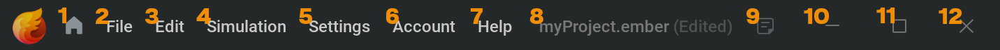
 Open or close project manager.
Open or close project manager.File:
New Project Ctrl + N: Leave the current project and start from the default preset If the current project has unsaved changes it will prompt you to ask if you want to save or not.
Open Project Ctrl + O: This will open a file browser so you can select a .ember file to open.
Recent Projects: Ctrl + Shift + P When hovering over this menu item it will open a menu to the right where you can pick a recently opened project.
Save Ctrl + S: Save the project to update the .ember file
Save As… Ctrl + Shift + S: This opens a file browser where you can define the filepath and filename of your project.
Increment and Save Alt + Shift + S : Saves an incremented copy of your current project file next to your project file. So if you’re working in myProject1.ember, your project will be saved as myProject2.ember in the same folder as myProject1.ember and you will automatically continue working in myProject2.ember. Note that the project is saved after incrementing. If your project doesn’t end with a number, _2 will be added to the first increment.
Import… Ctrl + Shift + I: Opens the file browser so you can look for a .fbx,.obj, or .abc file to import into your project. An
 Import node will be created in the node graph using the specified asset.
Import node will be created in the node graph using the specified asset.Export…: Instantly exports all
 Export nodes in the project.
Export nodes in the project.Export Variations…: Opens the Export Variations window for when you want to export a number of unique elements. For more information on this, please check out our Randomization page.
Quit Ctrl + Q: Close Embergen
Edit:
Undo Ctrl + Z: Undo action.
This can be all sorts of things like changing a parameter or creating a node.
Redo Ctrl + Y or Ctrl + Shift + Z: Redo action.
Delete Delete or Backspace: You can delete, cut, copy and paste things like nodes or keyframes.
Cut Ctrl + X
Copy Ctrl + C
Paste Ctrl + V
Simulation:
Hard Reset Ctrl + R: Restarts the simulation from the beginning.
Reset R: Restarts the simulation from the beginning of the loop bounds, or from the beginning of the timeline if there is none.
Step Once Z: Move one frame forward in the simulation.
Pause Space: Play or pause the simulation.
Account:
Login…: Opens the login window where you can log into your JangaFX account using your e-mail adress and password.
- When logged in, the following options are present in the Account dropdown menu:
My Account : This will take you to our online account platform where you can manage your subscriptions and billing.
My Plans…: Shows your active plans.
Logout…: Logs you out of your JangaFX account. You can still use the software if you have an active license.
Help:
JangaFX.com… : This will take you to the JangaFX website where you can see our products, preset marketplace, pricing page, and more!
Documentation… This will take you to the Embergen documentation.
Guided Tours…: Opens up a window on the right side of the UI where you can pick a guided tour to follow. Guided tours will explain Embergen features with visuals and text within the software.
License Manager: Opens the License Manager window. Please check our Licensing section for more information.
Release Notes…: Opens a window containing a list of all the changes the developers made to recent Embergen versions.
3rd Party Licenses…: Opens a window containing a list license notices of resources used to develop Embergen.
About…: Opens a window with our company statement and a brief summary on what Embergen can do.
Filename of the current project. (Edited) will be displayed behind it whenever you have unsaved changes. Nothing will show here when opening the default preset, but after making a change to it, it will display Untitled(Edited). A file browser will pop up to set the file name and location when trying to save an untitled file.
 Show project notes. Opens the Project Notes window. This icon only appears when notes are added to the project which can be done in Settings>Project Settings…>
Show project notes. Opens the Project Notes window. This icon only appears when notes are added to the project which can be done in Settings>Project Settings…>  Notes
NotesMinimize the Embergen window.
Maximize the Embergen window.
Close Embergen.
Viewport#
This is where you can view your simulations, shapes, forces or anything that’s in the scene.
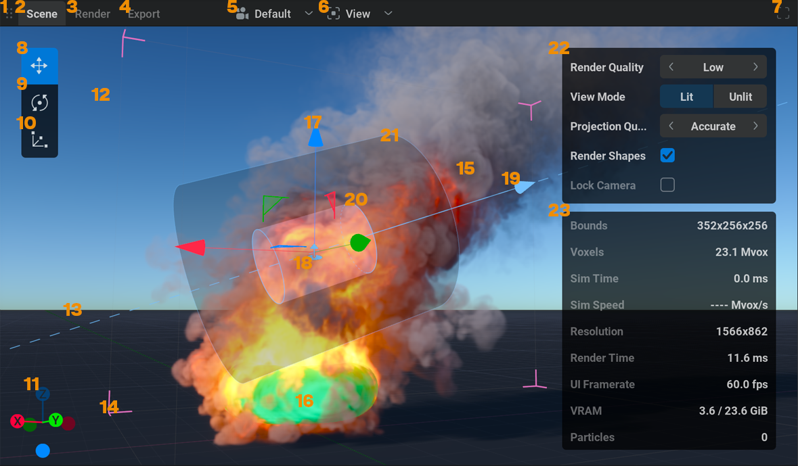
 Using
Using  dragging, you can use this icon to rearrange the UI layout by moving the 4 main sections.
dragging, you can use this icon to rearrange the UI layout by moving the 4 main sections.Scene is the default tab where you can view and manipulate everything.
 Dropdown menu of the available cameras. Here, you can select which camera you want to look through.
Dropdown menu of the available cameras. Here, you can select which camera you want to look through.
{kind=link}
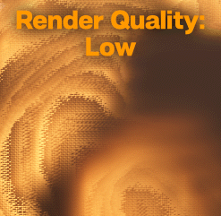
 Dropdown menu of all the things that can be hidden or viewed in the Scene tab.
Dropdown menu of all the things that can be hidden or viewed in the Scene tab.Simulation M (15)
Unlit Mode U Minimizes the shading complexity. This will significantly speed up the render speed and can be useful when you want better performance when working on your simulation and don’t need to see the final shading.
Bounding Box B (14)
Shapes H (16)
Backplates Shift+B This will toggle the backplate visibility. Backplates can be added in the Camera node.
Masking This visualizes all the voxels containing something.
Manipulators Shift+Q (17) This toggles the visibility for the transform, rotate, or scale manipulators.
Manipulator Switcher This shows the Move
 (8), Rotate
(8), Rotate  (9), and Scale
(9), and Scale  (10) buttons.
(10) buttons.Entity Icons (18) show the node icons on the node position. In this case, the Line Force node. Clicking on an entity icon will select the corresponding node.
Camera Gizmo (11) Visual representation of the viewport orientation of the active camera. You can
click on the dots to orient the view to that axis. Or click and drag the sphere to rotate the view.Render Quality will open a menu to its right where you can pick either Low Ctrl + 1, Medium Ctrl + 2, or High Ctrl + 3
In certain cases, like when using Flames translucency, you can get a lot of banding when you look up close at your sim. Setting a higher render quality will help to deal with this.
You can also lower the render quality to gain performance.
Low, Medium, and High are presets that can be edited in Settings>Preferences…>Viewport Quality
- Settings (22) Adds a box with common settings for easy accessibility.
Render Quality Quickly pick one of the three render quality presets mentioned above.
View Mode Pick between using Lit for proper shading, or using Unlit for simple shading to open up some resources for faster simulations. Same as toggling the U key.
Projection Quality Cycle through the projection quality presets. This mostly compromises between simulation speed and accuracy of the collisions and pressure. These settings are also in the
 Simulation node under the Projection tab. For more information about projection please check out our ..TBD.. section!
Simulation node under the Projection tab. For more information about projection please check out our ..TBD.. section!Render Shapes Toggle whether or not shapes are visible. Same as toggling the H key.
Lock Camera Lock the active camera so the view can’t be changed anymore. (doesn’t work for the default camera) This is the same as using the Lock checkbox in the General tab of the
 Camera node.
Camera node.
- Stats (23)
Bounds: The amount of voxels in all three axes. More voxels generally mean larger bounds and more space to simulate volumes. These values can be adjusted using the Voxel count parameter in the Domain tab of the
Simulation node.Voxels: The total amount of voxels in the simulation. This is the multiplication of the voxel dimensions mentioned above in mVox which simply means “Million Voxels”. For more information on voxels, please check our voxels section.
Sim Time: Time it takes to simulate one simulation step in milliseconds.
Sim Speed: Speed at which the Embergen is simulating in million voxels per second.
Resolution: The resolution of the viewport in pixels.
Render Time: Time it takes to render the volumes to the screen in milliseconds. You can see the numbers lowering when switching to a lower quality or unlit mode.
UI Framerate: How many times per second the UI is updated.
VRAM: The amount of currently used GPU memory vs total available memory.
Particle Count The amount of present particles created by Particles nodes. If it just says 7 it means there are 7 particles in the simulation, 7.0 K means 7000 particles, and 7.0 M means 7.000.000 particles.
 Toggle panel fullscreen.
Toggle panel fullscreen.
Sky: These settings are controlled in the Skybox node.
Ground: These settings are controlled in the Ground node.
Force Gizmo Most foces have a gizmo using light blue arrows showing the direction of the velocity injected by the force.
Inner Bound of the selected force. The transparent area of the inner bound shows the area where the force is at 100%. Bounds can be setup by setting the Falloff parameter to anything but None in the General tab of certain force nodes.
Outer Bound of the selected force. The darkened area shows the transition area where the force goes from 100% on the inside to 100% minus the Falloff percent (so by default 0%) on the outside.
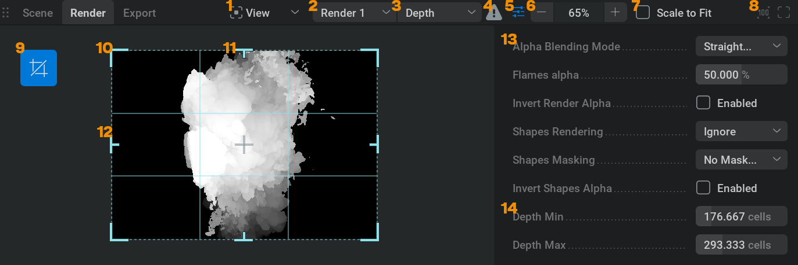
Render is the tab where you can preview what will be exported.
- View Dropdown where you can toggle the visibility of the stats.
Render nodes dropdown menu. Here, you can select which Render node you want to preview.
Render passes dropdown menu. Here, you can select which Render pass you want to preview.
 No Render pass mapping warning. Seeing this icon means that there is no Render pass mapping setup in the Render node. You can click on this icon to automatically set one up.
No Render pass mapping warning. Seeing this icon means that there is no Render pass mapping setup in the Render node. You can click on this icon to automatically set one up. Toggle render settings. This will show or hide the render settings (13,14) Render Settings
Toggle render settings. This will show or hide the render settings (13,14) Render SettingsZoom in or out.
Zoom to fit the whole tab. Checking this will disable 6
 Set the zoom (6) back to 100%
Set the zoom (6) back to 100%Toggle the crop gizmo.
Crop in the horizontal and vertical axis.
Crop vertical.
Crop horizontal.
General render settings
Render pass specific render settings.

Export Here you can View your exported flipbook or image sequence.
Channels.
click on any of these buttons to view the Red, Green, Blue, or Alpha channels individually, click on the channel again to go back to viewing Red, Green, and Blue together. Ctrl + click on a channel to add or subtract it from the channel selection.render pass. A dropdown menu of the mapped render passes where you can select which render pass you want to view the export of.
Flipbook. Format used for games where all the frames are stored in one image. You will only see this if the Export Mode in the Export tab of the
 Render node was set to Flipbook.
Render node was set to Flipbook.Export viewer. Shows the exported files.
Current Flipbook Frame, indicated with a thin light border. You can
click on any frame to set it to the current frame. Go To Start. Set the playhead to the beginning of the timeline. (the timeline in the Export tab)
Go To Start. Set the playhead to the beginning of the timeline. (the timeline in the Export tab) Play or pause the export.
Play or pause the export. Go To End. Set the playhead to the end of the timeline.
Go To End. Set the playhead to the end of the timeline.Loop. This will toggle if the export will restart playing from the beginning or stop when it reaches the last frame.
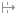
Skip Frame. This will toggle if the player will skip frames when necessary to keep up with the selected framerate or not.Current Frame. Displays the current playback frame. You can also
click within this box to set the current frame manually.Timeline. Horizontal representation of all the exported frame numbers.
Playhead. Sits at the current frame on the timeline. You can
click and drag the playhead to move through the timeline viewing different frames.Frames Per Second. Fps at which the export is played back. The higher this number the more “sped up” the playback seems. Try setting this to your target framerate, 24 fps for when you are working on a movie for example. This way you can see what the speed in the final result will look like.
{kind=link}
{kind=link}
{kind=link}
{kind=link}
{kind=link}
Node Graph#
This is where the building blocks to create the simulation are managed. You can think of it as if the wires represent data connecting one piece of the setup to the other.

- Using dragging, you can use this icon to rearrange the UI layout by moving the 4 main sections.
 Open search box. Clicking on this will open a search box where you can type a node name or a part of the name to quickly select that node.
Open search box. Clicking on this will open a search box where you can type a node name or a part of the name to quickly select that node. Toggle graph tree. (9)
Toggle graph tree. (9) Randomizes all seed parameters of all nodes containing them. This can be a quick way to get a variation on an effect. For example, if you use noise forces or shapes when making an explosion, you will get a unique explosion every time you click this icon!
Randomizes all seed parameters of all nodes containing them. This can be a quick way to get a variation on an effect. For example, if you use noise forces or shapes when making an explosion, you will get a unique explosion every time you click this icon! Move view to center of nodes.
Move view to center of nodes. Move view to center of selected nodes.
Move view to center of selected nodes.- Reset zoom to default.
- Toggle panel fullscreen
Graph Tree Here you’ll find all the nodes represented in a list. You can use the icon to get a dropdown menu of nodes that are connected to an input pin of the node. If you hover your mouse over a node name, you can click the
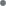
to select the node. This can be useful for quickly selecting nodes to get to its parameters without searching the node graph! You can also select multiple nodes by using Shift + Selected nodes are indicated with the icon.Node. Building block of the simulation. Selected nodes have a blue border.
Input pins
Connection wire
Output pin
 Toggles whether a node is enabled. Shift + to toggle for all selected nodes.
Toggles whether a node is enabled. Shift + to toggle for all selected nodes.Comment. Custom-named container for nodes useful for ordering and readability. You can create a comment by selecting Create Comment in the
 menu of the node graph or by pressing Ctrl + G For more information on comments please check our Comment section!
menu of the node graph or by pressing Ctrl + G For more information on comments please check our Comment section!
{kind=link}
{kind=link}
{kind=link}
Note. Custom textbox that can be places around the node graph to provide extra information or aid memory. You can create a note by selecting Create Note in the right-click menu of the node graph or by pressing Ctrl + H For more information on comments please check our Note section!
Minimap. Small overview of the whole node graph. The minimap can be enabled and adjusted in the Settings>Preferences…>
 General section.
General section.Nodes are visualized by blocks colored based on their respective icons. Selected nodes have a white border.
Comments are visualized by rectangles below the nodes. Comments are colored based on the colors they have in the node graph.
Visible node graph area. The white semi-transparent box indicates what section of the node graph is currently visible. Zooming in on the node graph will make this box smaller and zooming out will make it bigger. To move the visible section using the minimap you can
click to jump to the desired area or click and drag to move there.
Timeline Editor#
This is where time is visualized from left to right.
For a description of how to use this editor check out our Timeline Editor section.
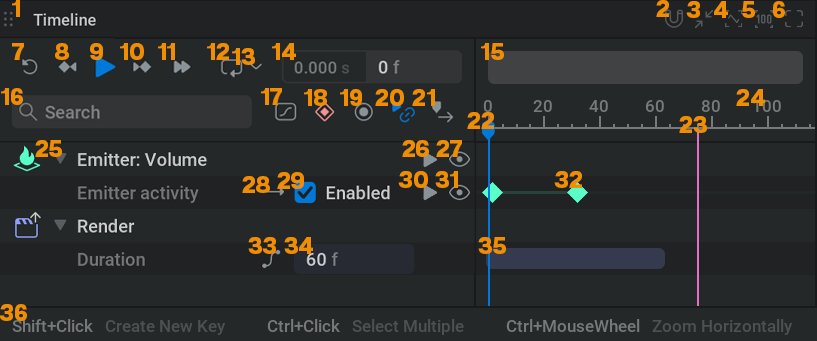
- Using dragging, you can use this icon to rearrange the UI layout by moving the 4 main sections.
 Snap keys to frames. With this turned on (indicated by the icon turning blue), keyframes can only be created on whole frame numbers and can only be moved whole frame numbers.
Snap keys to frames. With this turned on (indicated by the icon turning blue), keyframes can only be created on whole frame numbers and can only be moved whole frame numbers.- Fit view to all keys
 Fit view to selected keys
Fit view to selected keys- Reset the vertical zoom to default in the Curve Editor. Shift + click this icon to reset the horizontal zoom.
- Toggle panel fullscreen
 Reset R Reset the simulation to the beginning of the timeline.
Reset R Reset the simulation to the beginning of the timeline. Move the playhead to the previous keyframe Left
Move the playhead to the previous keyframe Left- Play or pause the simulation Space
 Move playhead to the next keyframe Right
Move playhead to the next keyframe RightToggle Loop L When looping is on you’ll see the looping area represented in blue in the timeline editor. This blue bar can be moved around by
clicking and dragging the middle or scaled by clicking and dragging the edges.- This dropdown menu gives you quick access to the options related to looping.
- Timeline
Loop: This will have the playhead loop over the same portion of the timeline, including all the keyframe animations, while the simulation keeps running forward.
- Simulation
Loop This will loop the simulation blending the min and max positions of the Loop Bounds together.
Repeat This will restart the simulation when reaching the Repeat Frame
Time Controls This will select the Time Control tab of the
Simulation node for quick access to all settings related to looping or repeating the simulation.
Toggle between displaying the timeline in seconds or frames. Shift + F
Scrollbar for the timeline.
- Here you can search for a specific parameter in the list of animated parameters.
 Toggle Curve Editor ` For a description of how to use this editor check out our Curve Editor section.
Toggle Curve Editor ` For a description of how to use this editor check out our Curve Editor section. Toggle Timeline Autokey A With this on a keyframe will be added at the playhead when changing the value of a parameter with keyframe animation enabled.
Toggle Timeline Autokey A With this on a keyframe will be added at the playhead when changing the value of a parameter with keyframe animation enabled. Toggle Timeline Recording Shift + R When you start the simulation with this button, all changes made to parameters with Timeline Override enabled will be translated to keyframes in real time.
Toggle Timeline Recording Shift + R When you start the simulation with this button, all changes made to parameters with Timeline Override enabled will be translated to keyframes in real time. Toggle Timeline Sync D With this one the playhead is always at the same position as the stimulation time. So the blue line and the pink line can’t be split up when playing.
Toggle Timeline Sync D With this one the playhead is always at the same position as the stimulation time. So the blue line and the pink line can’t be split up when playing.Toggle Follow Playhead F With this on, the timeline will be panned to always keep the playhead in the middle of the editor.
 Playhead Indicates the current time on the timeline.
Playhead Indicates the current time on the timeline.This indicates the current time the simulation is at.
Frame number.
Node with a parameter that has keyframe animation on it. You can use the icon to hide or show the animated parameters.
 Enable or disable the keyframe animation for the node. When disabling this the parameters of the node won’t change over time anymore but will keep the values they had when toggling this button off.
Enable or disable the keyframe animation for the node. When disabling this the parameters of the node won’t change over time anymore but will keep the values they had when toggling this button off. Hide or Show the curves for all parameters of this node in the Curve Editor.
Hide or Show the curves for all parameters of this node in the Curve Editor. Specify the curve continuation. Set the keyframe animation for this parameter to either Play Once, Loop (restart the animation at the end), or Ping Pong (plays the animation forwards then backwards then forwards, and so on.)
Specify the curve continuation. Set the keyframe animation for this parameter to either Play Once, Loop (restart the animation at the end), or Ping Pong (plays the animation forwards then backwards then forwards, and so on.)
{kind=link}
{kind=link}
{kind=link}
{kind=link}
{kind=link}
{kind=link}
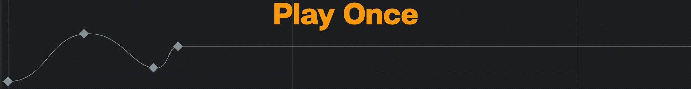
Parameter Here you can set the parameter value for the current frame.
- Enable or disable the keyframe animation for the parameter. When disabling this the parameter won’t change over time anymore but will keep the value it had when toggling this button off.
- Hide or Show the curves for this parameter in the Curve Editor.
 Keyframe
Keyframe

 This button can be found on an Export or Import node.
This button can be found on an Export or Import node.For an export node, this will toggle a different view where you can see and edit how the frames will be exported.
Shows the duration of the sequence that will be exported.
This indicates what part of the timeline will be exported. This bar can be moved around.
Information on the controls of the editor. These will change to showing keyframe controls when hovering over a keyframe.
Properties Panel#
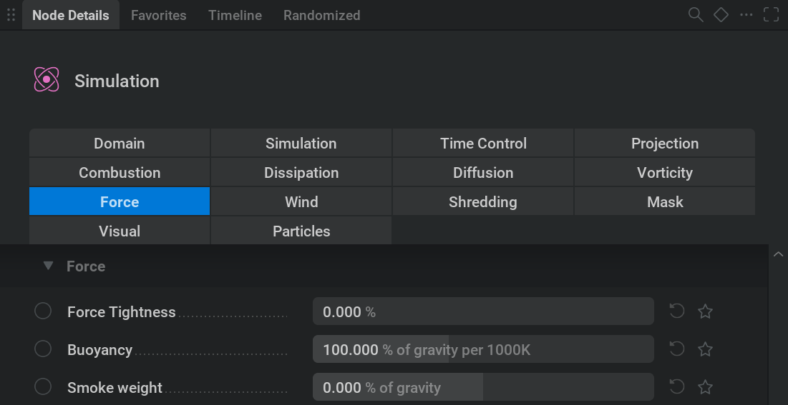
- Using dragging, you can use this icon to rearrange the UI layout by moving the 4 main sections.
Node Details: This tab shows all the parameters for the selected node.
{kind=link}
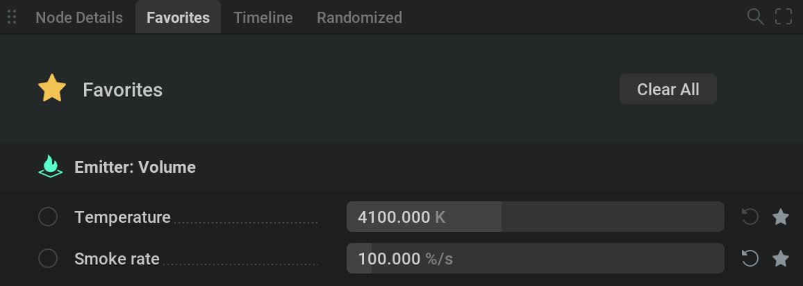
Favorites This tab shows all the parameters that are marked as favorites.
You can do this with any parameter from the Node Details tab by checking the star icon
 right next to it.
right next to it.Clear All will remove all the items from the favorites list. All the star icons will be unchecked.
In the menubar in Settings/Project Settings… You can also auto-favorite parameters based on the default, the last saved, or a loaded .liquigen file!

Timeline: This tab shows all the parameters with keyframe animation enabled.
Clear All will remove all the items from the list. Note that this will remove all animation!
Keyframe animation on a parameter is enabled by setting the override state (11) to Timeline Override.
For more information on animation (timeline) please check out our Keyframe Animation section.

Randomized: This tab contains all the parameters with randomization enabled which can be done by Shift +
clicking one the override state cycler (11)Randomize All Will assign a new random value to all parameters in the Randomized tab.
The range sliders on the left side define the minimum and maximum between which the random value can be picked. The field right next to this is the parameter value.
 Will randomize the parameter (instead of all of them).
For more information check out our Randomization section!
Will randomize the parameter (instead of all of them).
For more information check out our Randomization section!- This will open a search box to find the parameter you are looking for regardless of the tab you are in.
Only show the parameters with keyframe animation regardless of the tab you are in. This is different from the timeline tab since this only shows animated parameters of the selected node instead of all nodes.
This will open a dropdown menu with the options to reset or randomize all parameters of the selected node or tab.
- Toggle panel fullscreen
Parameter tab: All nodes have their collection of parameter tabs sorting the parameters in easy-to-find categories.
{kind=link}
{kind=link}

Parameter tab divider. This visually divides the parameters of a certain tab in the list. You can hide or unhide the parameters of this tab by using the icon.
 Cycle Override State: Clicking on this will cycle through the different override states for the parameter.
Cycle Override State: Clicking on this will cycle through the different override states for the parameter.- No Override: The parameter is only driven by the value put into the field, checkbox, or dropdown menu.
- Timeline Override: The parameter is driven by the keyframes and can vary over time. For more information please check out our Keyframe Animation section.
 Pin Override: The parameter is driven by an external node like an oscillator. The value can change over time based on a function. For more information check out our Modulating Parameters section.
Pin Override: The parameter is driven by an external node like an oscillator. The value can change over time based on a function. For more information check out our Modulating Parameters section. Randomize Override: Shift + click. The parameter value can be randomized within the range specified in the Randomized tab. For more information check out our Randomization section.
Randomize Override: Shift + click. The parameter value can be randomized within the range specified in the Randomized tab. For more information check out our Randomization section.
Parameter name: Hovering over this will show a description of what the parameter does.
Checkbox: This can set a parameter to on or off.
- Reset to the default value.
- Mark as favorite: This will make the parameter appear in the favorites tab.
Value Slider: You can
within this box to type in the value you want. Or and drag to change the value. You can also apply math within these text boxes. For example, typing 4*7/2+6-2 and pressing Enter will put a value of 18 in the parameter. This can be helpful for quickly multiplying a value or reducing it by half for example.
{kind=link}
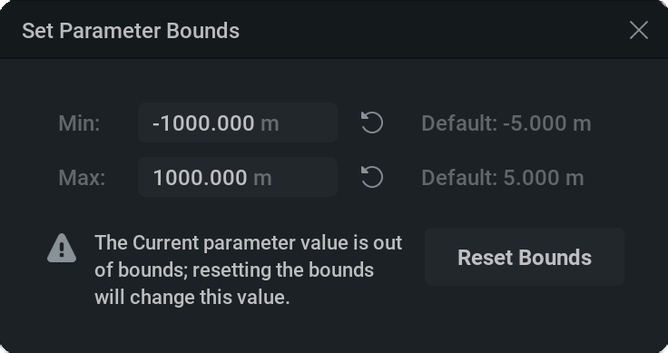
This appears when a parameter value outside the default bounds is set by typing it in. Doing this will set the bounds to the new minimum or maximum value. You can click on the icon to open the Set Parameter Bounds window where you can set the minimum or maximum value using the text fields, reset them to the default indicated on the right by clicking on the
icon, or reset both using the Reset Bounds button. If the is present it means that the current parameter value is outside of the minimum or maximum bound and resetting that bound will result in the value being overwritten to the minimum or maximum value.
{kind=link}
The parameter bounds affect the range of the parameter slider, modulation and timeline controls.
Vertical scrollbar. You can use this to scroll through the list of parameters.
Horizontal scrollbar.
Current software version.
To quickly jump to a parameter you can use Ctrl + P
Project Manager#

Return to the normal user interface with the project you’re currently in.
Minimize the Embergen window.
Maximize the Embergen window.
Close Embergen.
JangaFX account. In this section, you can go to your JangaFX account which stores things like your licenses and plans.
Open the default preset.
This opens a file browser where you can look for a .ember file to open.
Go to the Project Manager home page, which features a list of your most recent projects so you can continue working quickly, three default presets that can be very useful starting points for your projects, and our latest YouTube videos.
Go to the learning section featuring our in-software guided tours, tutorial videos, and recent live streams.
Go to the preset list containing a wide variety of presets to learn from or to use as a starting point for your effects.
Go to a full list of all the projects you’ve opened. Using the dropdown menu, you can sort your projects by filename, file creation date, or the latest file modification date. You can
click the  arrow to toggle the list between ascending or descending. You can also type a part of the filename in the search box to find the project file you’re looking for.
arrow to toggle the list between ascending or descending. You can also type a part of the filename in the search box to find the project file you’re looking for.
Pro tip: You can drag a lot of .ember files into embergen together (like a preset pack) and they will all conveniently show up in the projects list.
Open the License Manager. For more information on licensing please go to our Licensing section!
Link to our discord server where you can get help, give feedback on the software, get early builds, or show off things you made.
Link to our forums.
Links to the JangaFX social media pages.
Current software version.
Preset categories. Use these buttons to filter specific preset types. The 8BG and 24GB buttons stand for the required GPU VRAM in gigabytes.
Search field where you can type the name or a part of the name to find the preset you are looking for.
Preset. A preset is a read-only embergen project file that ships with the software. When in the My Projects (11) section, this list contains project files you saved yourself.